Github Page와 Hexo로 블로그 만들고 테마 적용하기 + 검색엔진 최적화(SEO)
Github Page와 Hexo로 1시간만에 블로그 만들기 + 테마 설치
깃헙 설치, 플러그인 설치, 검색엔진 최적화, rss 까지!
간략한 소개
이번 포스팅에서는 GitPage와 Hexo 프레임워크를 이용해서 개인 블로그를 손쉽게 만드는 방법을 소개해드리려고합니다!
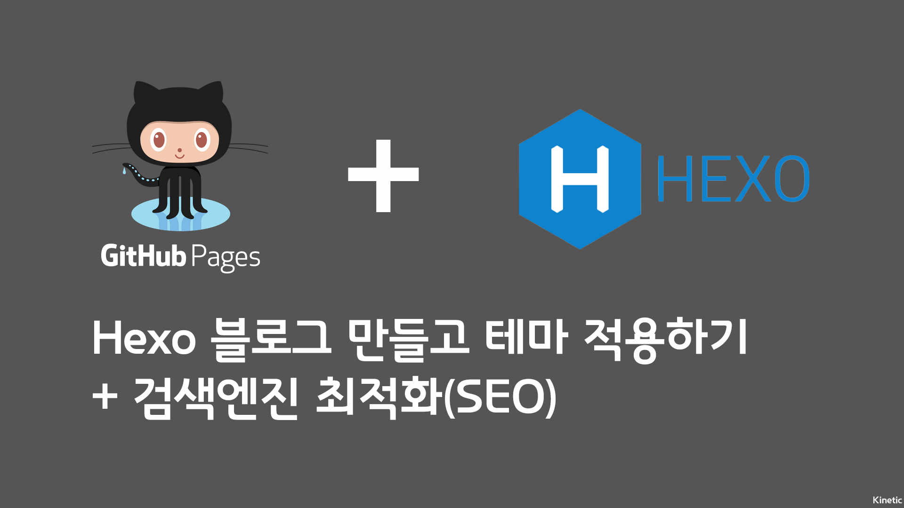
- Github Page: https://pages.github.com/
- Hexo: https://hexo.io/
지금 읽고계신 저의 블로그도 GitPage와 Hexo 그리고 Icarus 테마로 만들어졌는데요
GitPage는 정적 페이지를 username.github.io로 쉽게 호스팅하도록 도와줍니다!
Hexo는 정적 페이지를 쉽게 만들 수 있도록 도와주는 블로그 프레임워크입니다!
hexo의 장점으로는
npm(node package manager)를 통해 간단히 설치 가능Node.js기반으로 매우 빠른 생성 속도를 제공합니다.- 다양한 플러그인을 지원
Markdown의 모든 기능을 지원
등이 있겠네요
그럼 차근차근 한단계씩 만들어봅시다!
GitHub 사용하기
가입 및 정적 페이지 호스팅
Gitpage를 사용하기 위해서는 우선 Github에 가입이 되어있어야합니다!
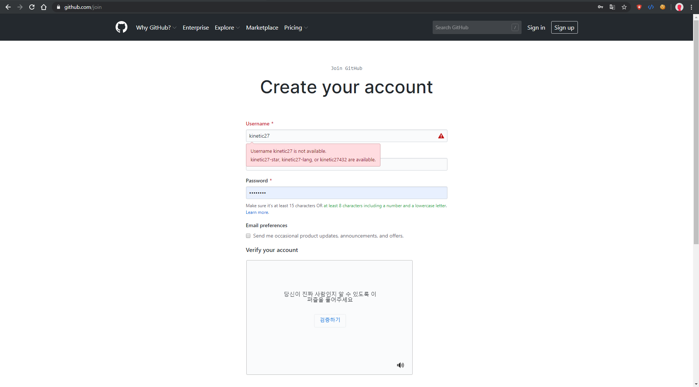
깃허브로 들어가셔서 가입 버튼을 누른후 회원가입을 우선 진행해줍니다!
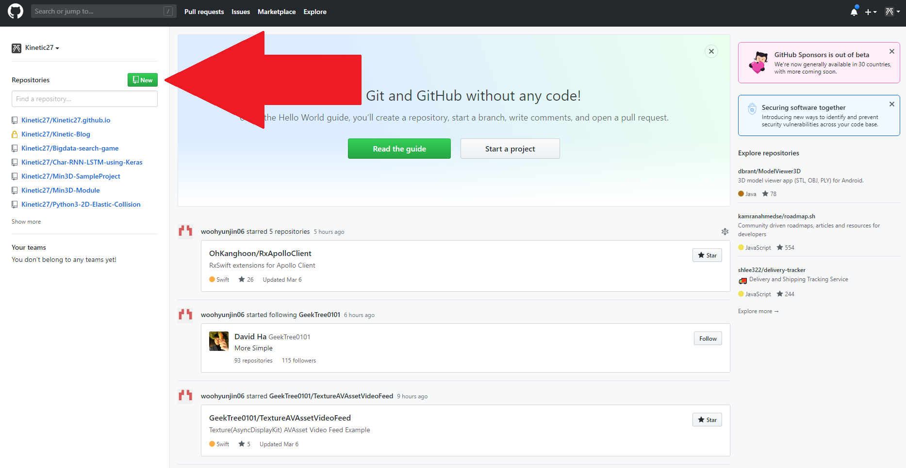
그 다음 새로운 repository를 만들어주기 위해서 new 버튼을 누릅니다!
누르면 새로운 레포를 생성하는 창이 뜨는데요.
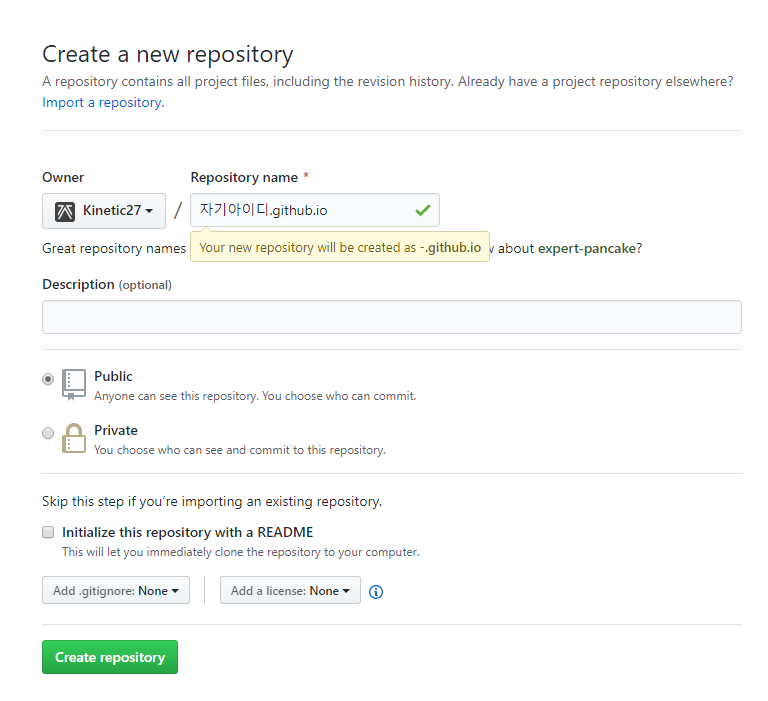
Repository name에는 깃헙아이디.github.io를 입력해주시고
기본값인 Public으로 두고 Create repository를 눌러서 레포를 생성해줍니다!
여기까지 하셨다면 절반은 성공했습니다!
정적 페이지 테스트
이번엔 아까 설치한 Gitpage의 기능을 테스트해보면서 Git을 설치하고 이용해볼건데요.
이미 나는 Git을 사용중이다, 사용방법을 알고있다 하시는 분들은 넘어가셔도 좋습니다!
Git 설치
저희는 Github를 이용하기 위해서 Git을 설치하고 이어서 진행할겁니다.
여기서 받으시고 next를 눌러 기본 옵션으로 설치해줍니다!
곧 Git 설치법 글로 자세히 설명하겠습니다
CMD로 폴더 선택
먼저 테스트를 위해서 새로운 빈 폴더를 하나 만들어줍시다!
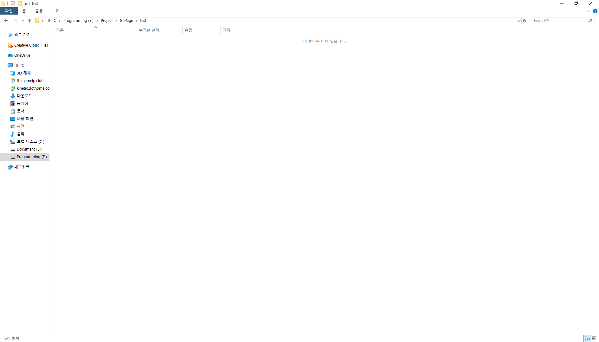
저는 test라고 이름을 지었고 제 폴더 경로는 E:\Project\GitPage\test입니다!
이번엔 CMD(명령 프롬프트)를 열건데요
윈도우키 + R을 한 후 cmd라고 입력하시면 검은 창이 뜰겁니다!
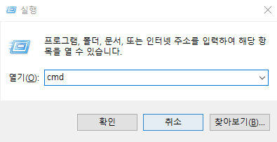
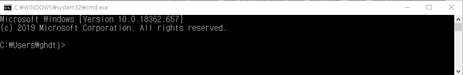
여기 보시면 저는 지금 C:\Users\ghdtj 폴더가 선택되어있습니다.
하지만 저흰 아까 만든 프로젝트로 이동해야합니다!
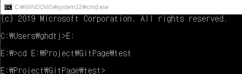
먼저 드라이브가 바뀌니 E:를 입력해줍니다!
그 다음 cd 아까 경로를 입력해줄건데요.
저같은 경우는 cd E:\Project\GitPage\test가 되겠네요!
정적 페이지를 호스팅해보자
현재 github에 올라가있는 초기 셋팅을 내 컴퓨터(로컬)로 옮겨봅시다!
Clone the repository
아까 열고 이동한 cmd에 아래의 커맨드를 입력합시다.
1 | $ git clone https://github.com/username/username.github.io |
Hello World
그 다음 이 두줄을 순서대로 입력합시다.
cd로 해당 폴더로 이동, 그 아래 커맨드로 테스트를 위한 index.html 파일을 만들어줍니다!
1 | $ cd username.github.io |
Push it!
마지막으로 다시 깃헙으로 프로젝트를 넘겨줄 차례입니다!
마찬가지로 차례대로 진행해주세요!
1 | $ git add --all |
…and you’re done!
브라우저를 열고 https://<자기아이디>.github.io로 들어가보세요!
Hello World가 써있는 페이지가 뜨면 성공입니다!
Hexo 설치
이제 저희는 Hexo를 설치해볼겁니다!
아까 말씀드렸듯이 Hexo는 Node.js기반이라 npm을 통해서 간편하게 설치할 수 있습니다!
node.js 설치
이미 Node.js가 설치되어있어 npm 사용이 가능하신분들은 넘어가셔도 좋습니다!
https://nodejs.org/en/으로 들어가서 노드 LTS버전을 설치해줍니다!
여기도 마찬가지로 따로 건들 항목은 없고 next만 눌러주시면 설치가 간편히 끝납니다!
Hexo 클라이언트 설치
Hexo를 사용하기 위해서는 우선 npm에서 hexo 클라이언트를 받아와야합니다!
CMD를 열고
1 | $ npm install hexo-cli -g |
라고 입력해주면 됩니다!
hexo 블로그 폴더 생성
이번에는
1 | $ hexo init blog |
를 입력해서 blog라는 이름의 hexo폴더를 만든 후,
폴더를 선택하고 npm을 설치합시다!
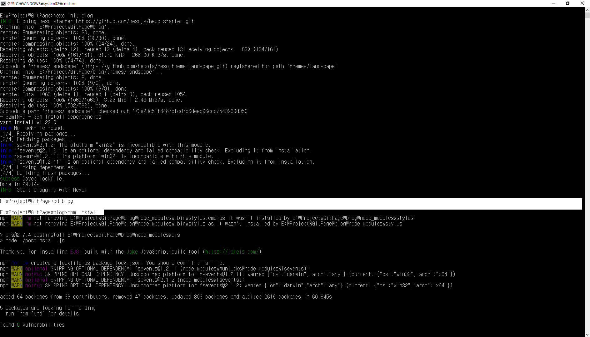
이렇게 되면 성공입니다!
블로그 기본 정보 수정
방금 생성한 blog폴더를 열어보시면 _config.yml라는 파일이 생겨납니다!
파일을 열어서 내용을 수정해봅시다!
site 기본 정보 수정
1 | # Site |
를 찾아서 원하시는대로 수정해주시면 됩니다!
저같은 경우는
1 | # Site |
으로 수정했네요!
URL 정보 수정
바로 아래에서 url 셋팅을 찾아서주세요!
1 | # URL |
라고 되어있는데요, 여기서 url에 자신의 깃허브 유저명을 넣어서 http://username.github.io을 넣어주시면 됩니다!
저는 이렇게 수정해봤습니다!
1 | # URL |
Deploy 설정
쭉 내리시면
1 | # Deployment |
가 보일텐데요!
저희는 이 항목을 자신의 Gitpage Repository 정보를 넣어서 수정할겁니다!
여기도 username 바꿔주세요!
1 | # Deployment |
hexo 테스트
여기까지 오셨다면 기본적인 설정이 완료된겁니다! 🎉🎉
이제 프로젝트 폴더로 이동해둔 CMD를 다시 열고,
아래의 커맨드를 입력하면 로컬에서 테스트가 가능합니다!
1 | $ hexo server |
서버가 열렸다는 문구가 명령창에 뜨면 웹 브라우저를 열고 http://localhost:4000로 들어가서 블로그를 볼 수 있습니다!
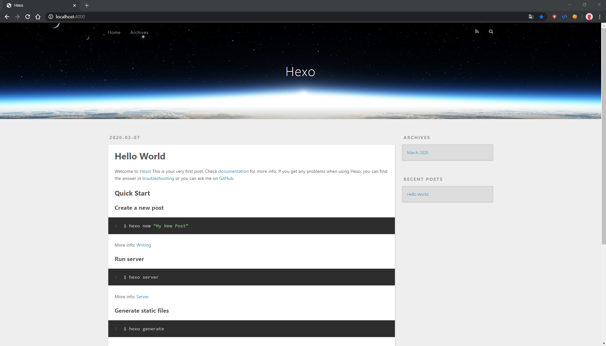
Github에 배포하기
이제 방금까지 만든 헥소 블로그를 깃허브로 배포해봅시다!
로컬에서 열면 자기 컴퓨터에서만 보이니까요!
아까 CMD창을 다시 열어줍니다.
혹시 닫으셨다면 다시 CD명령어로 blog폴더까지 들어가주시고요.
아래의 두 명령어를 입력해서 생성, 배포를 해주세요
Hexo를 이용해 정적 웹 리소스 생성하기
1 | $ hexo generate |
줄여서 hexo g로도 사용가능합니다!
github에 배포하기
1 | $ hexo deploy |
줄여서 hexo d로도 사용가능합니다!
hexo generate -deploy 혹은 hexo g -d로 사용가능합니다!!
혹시 배포시에
ERROR Deployer not found: git
라는 에러가 뜬다면
1 | npm install hexo-deployer-git --save |
를 통해서 플러그인을 설치해주세요!
여기까지 하셨다면 다시 https://username.github.io로 들어가보시면 hexo페이지가 보일겁니다!! 🎉🎉🎉
테마 설치법
hexo에는 사용자가 다운받아서 적용할 수 있는 수많은 테마들이 존재합니다!
링크를 타고 들어가셔서 테마를 고른다음
해당하는 테마의 이름 부분을 누르시면 해당 테마가 올라가져있는 github이 열리는데요!
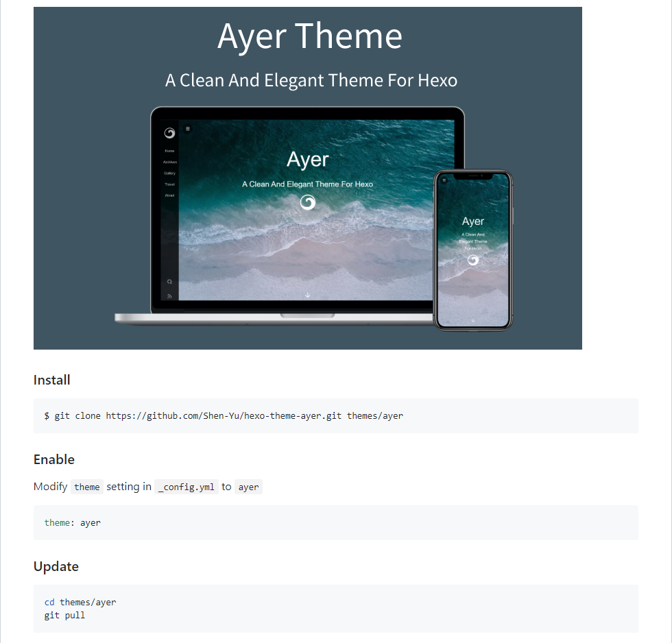
각 테마가 시키는대로 설치하면 됩니다!
공통점은
1 | $ git clone [테마에 링크 써있는거.git] themes/테마이름 |
방식으로 clone해서 설치하고_config.yml에 들어가서 theme: 테마이름으로 수정해줘야합니다!
그다음 hexo g 명령어를 사용하면 테마 폴더 안에 _config.yml가 하나 더 생길텐데 이것으로 테마의 제목, 내용 등을 수정할 수 있습니다!
고치고 hexo g, hexo s를 통해서 반영되었는지 확인해봅시다!
참고로 제가 쓰고있는 테마는 Icarus라는 테마입니다!
앗 작동이 안됩니다!
실행시
1 | ERROR: pakage [이름] is not installed. |
에러가 뜨는 경우가 있습니다.
icarus 테마 설치시에는 cheerio 에러가 뜨는데요.
이럴때는
1 | $ npm install [이름] --save |
명령어를 통해서 없는 패키지를 모조리 설치합시다!
테마를 바꿨는데 적용이 안됩니다!
그럴때는
1 | $ hexo clean |
을 사용해서 초기화를 해준 후 다시
1 | $ hexo g |
를 해줍시다!
블로그 홈의 로고등 이미지 변경
이미지 변경법은 간단합니다.
해당 테마 폴더의 source/images에 이미지를 넣어주고
logo: /images/logo.svg와 같이 기존의 이미지를 대체하도록 수정하면됩니다.
꿀팁, submodule사용해서 테마 관리
테마를 다른 github 레포에서 관리하는 방법이 있습니다!
내 저장소의 특정 subdirectory에 다른 Git저장소를 연결해서 사용하는 방식인데요.
쉽게 생각하면 레포안에 레포를 import한 느낌입니다.
방법은 간단합니다. 위에서 소개한 방법을 이용하는 대신 명령어가 바뀝니다
1 | $ git clone [테마에 링크 써있는거.git] themes/테마이름 |
대신에
1 | $ git submodule add [테마에 링크 써있는거.git] themes/테마이름 |
를 해줍니다!
그다음 똑같이 _config.yml의 theme:를 수정한 후 hexo g로 생성해줍니다!
나중에 다른 환경에 자신이 만든 저장소를 클론해야 할 일이 생길 텐데 단순히 클론만 받으면 하위 경로에 있는 submodule까지 클론이 되지 않습니다!
이럴때는 이 명령어로 해결합니다!
1 | $ git submodule update --init --recursive |
꿀팁, README.md 넣기
헥소에서 리드미를 넣어주려고 source_dir에 파일을 넣어줬더니 hexo g를 하면 public_dir에 README.html로 변환되어서 들어간다…
해결방법은 간단합니다!
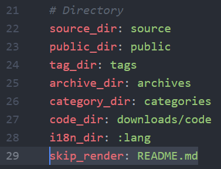
요렇게 skip_render 속성을 주시면 됩니다!
폴더 단위로도 사용이 가능하니 참고하세요!
Icarus테마 꿀팁
About 페이지
테마 설치하고 돌렸는데 Cannot GET /about/이라면서 about 페이지만 안떠서 불편하셨죠?
이럴떄는 프로젝트의 source에 about 폴더를 만들고 그 안에 index.md를 추가해보세요!
간단하게
1 | --- |
요런식으로 적고 hexo g, hexo s해서 보면 에러가 사라지고 보일겁니다!
포트폴리오 적기에 안성맞춤이네요!
OG image 설정법
OG이미지란 링크를 보내면 읽어서 띄워주는 미리보기 같은건데요.
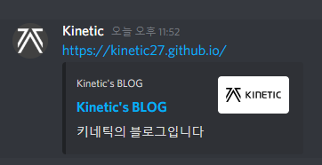
이를 설정하기 위해서는 크게 두가지 방법이 있습니다.
source폴더 안에images폴더를 만들고og_images.png라는 이름으로 넣어줍니다.hexo의_config.yml에 가서article:하위에og_image: "이미지경로"의 형태로 추가한다.
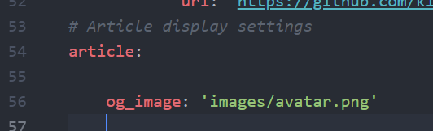
두가지 방법 모두 post.js안에 이렇게 정의되어있어서 혹시나하고 해봤더니
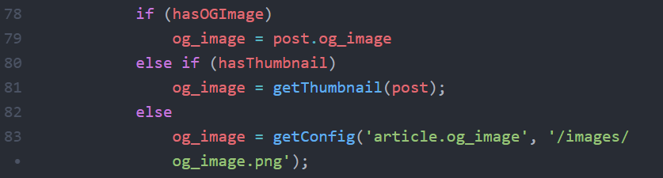
모두 html head에 잘 반영되는것을 볼 수 있다.
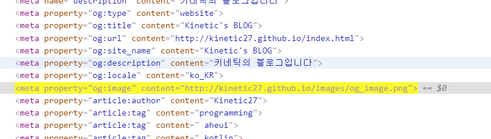
새 글 쓰는법
관련 포스트는 추후 작성될 예정이지만 간단히 소개해드리면
cmd를 열고
1 | $ hexo new [레이아웃명] [새 포스트명] |
을 입력하면 source/_posts 폴더에 새 md가 생길겁니다!
레이아웃명은 post가 default라서 생략가능합니다!
이제 Markdown 형식을 가지고 글을 쓰면 됩니다!
바로 발행되지 않는 글을 쓰고싶다면 레이아웃명에 draft를 적으면 되겠네요!
그후 발행시에는
1 | $ hexo publish [포스트명] |
로 draft에서 publish해줍니다!
유용한 플러그인 설치
1 | Icarus 테마 3.0 유저는 jsx기반이니 아래의 방법대로 사용이 불가능한 플러그인들이 있습니다 |
SEO
SEO란?:
영어로 Search Engine Optimization로 대부분 검색엔진 최적화(SEO)와 관련되어있어요!
플러그인 설치와 삭제
설치
npm install
–save
삭제
npm uninstall
hexo-autonofollow
이 플러그인은 rel="external nofollow"속성을 자동으로 추가하여 외부 링크 크롤링을 막아준다!
1 | $ npm install hexo-autonofollow --save |
_config.yml 수정
1 | nofollow: |
hexo-auto-canonical
이 플러그인은 대표 URL 지정을 돕는다!
1 | npm install --save hexo-auto-canonical |
head.ejs 안에 코드를 넣어야하는데 테마마다 다르니 잘 찾아보자.icarus 테마의 경우는 icarus/layout/common/head.ejs에 위치해있다.
넣을 코드
<%- autoCanonical(config, page) %>
1 | <head> |
hexo-generator-seo-friendly-sitemap
이 플러그인은 더욱 효율적으로 크롤링 할 수 있도록 사이트맵 xml 파일을 자동으로 생생해줍니다!
1 | npm install hexo-generator-seo-friendly-sitemap --save |
_config.yml에 아래의 내용을 추가해줍니다!
1 | # sitemap auto generator |
hexo-generator-feed 추가
RSS 피드를 만들어서 일종의 블로그 구독기능을 만들어주는데요!
1 | npm install hexo-generator-feed --save |
_config.yml에 아래의 내용을 추가해줍니다!
1 | # rss feed auto generator |
3가지 옵션은
| 옵션 | 내용 |
|---|---|
| type | feed의 종류 (atom/rss2) - * 네이버는 atom을 지원하지 않음 |
| path | feed가 생성될 경로(default : atom.xml, rss2.xml) |
| limit | 최신 포스트 수 설정 (0 또는 false - 전체 포스트) |
입니다!
hexo-related-popular-posts
1 | $ npm install hexo-related-popular-posts --save |
으로 설치하고요
article.ejs의 맨밑에 아래 코드를 삽입합니다!
<%- popular_posts () %>
_config.yml 밑에 추가해줍니다!
1 | # More detailed settings |
hexo-generator-robotstxt
자동으로 robot.txt 파일을 생성해주는 플러그인 입니다.
설치
1 | npm install hexo-generator-robotstxt --save |
_config.yml에 적용!
1 | robotstxt: |
를 추가해줍니다!
hexo-asset-link
이 플러그인은 필수템입니다.
1 | $ npm install hexo-asset-link --save |
포스트의 md파일이 있는곳에 포스트의 이름과 동일한 폴더를 만들고 이미지를 넣으면
예를들어 이렇게 될텐데요
1 | +-- _posts/ |
그러면 이제 이미지에 접근할때

으로 간단하게 접근이 가능해집니다!
자세한 설명은 https://www.npmjs.com/package/hexo-asset-link 에서 확인할 수 있습니다!
검색엔진에 등록하기
구글
구글 애널리틱스(Google Analytics)에 가입을 먼저 해야합니다.
그 후 사이트 정보를 입력하고 추적 ID를 발급받습니다!
_config.yml에서 plugins 항목에 google-analytics를 추가해줍니다!
1 | plugins: |
그 다음 Search Console로 들어가서
가입 후 속성을 추가해 줘야합니다.
인증 방법은 두가지로 생성된 html파일을 루트에 올린 후 확인 하는 방법과 애널리틱스 가입을 확인하는 방법으로 인증을 하는데 저는 애널리틱스 인증 방법으로 통과했네요
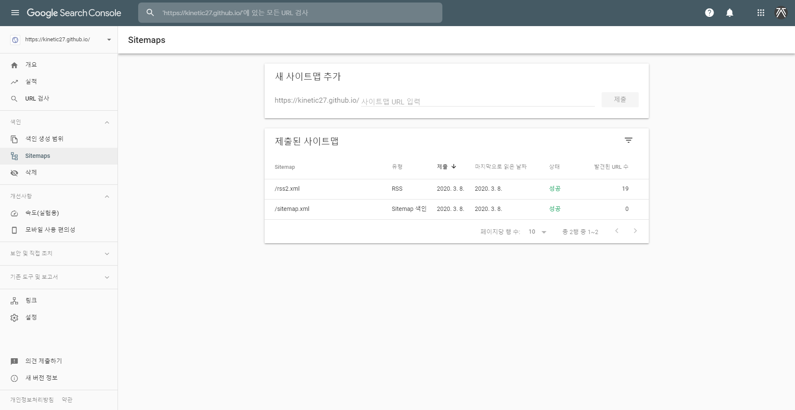
위와 같이 Sitemaps 메뉴에서 아까 플러그인을 통해 생성한 sitemap.xml과 rss2.xml을 추가해 주세요!
보통 등록후 2~3일동안 데이터 수집 처리 과정이 걸린다고 합니다!
네이버
네이버 웹마스터로 들어갑니다!
그 다음 연동 사이트 목록 페이지에서 내 사이트 추가에 블로그 주소를 추가해 줍니다.
이때 인증과정이 있는데
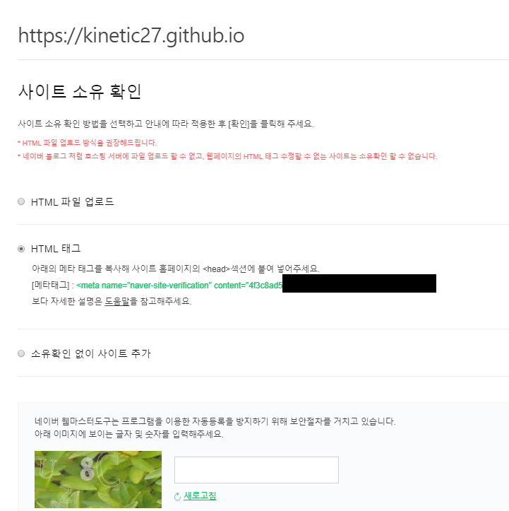
저는 두번쨰 방법으로 통과했어요.
icarus 테마의 경우는 icarus\layout\common\head.ejs에
1 | <meta charset="utf-8" /> |
이런식으로 meta가 모여있는곳에 넣어주면 됩니다!
그 다음 아래의 사진처럼 요청 탭에 가셔서 RSS와 사이트맵을 제출해줍니다!
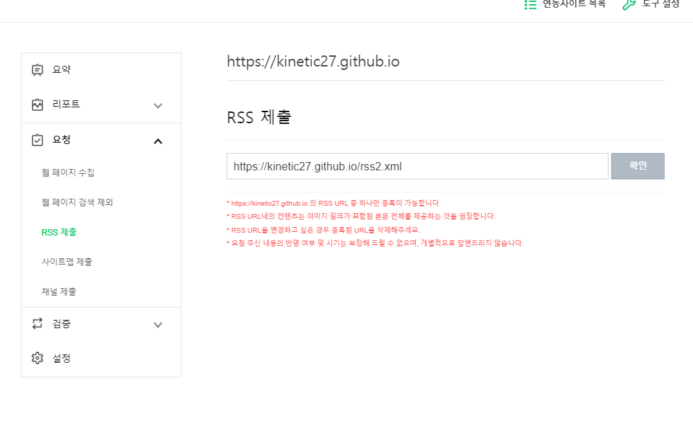
다음
다음은 다음 검색 등록에 들어가서 블로그 등록을 입력하시면
간편하게 등록할 수 있습니다!!
저는 3일정도 걸렸습니다!
이것으로 블로그를 만들 수 있었는데요!
username.github.io에는 hexo g를 통해서 생성된 public폴더 안의 내용만 올라가니
프로젝트 전체를 담을 레포를 하나 더 파서 저장해두시는걸 추천합니다!
저는 이때 .gitignore를 사용해서 쓰고있습니다!
1 | .DS_Store |
하다가 막히시는 부분이 있으면 댓글로 남겨주세요!
Refenence
Thanks to
- 응원해주신 비아이즈 (Vision & A.I. study, Be eyes) 여러분 감사합니다!
- 오타 잡아주신 Anna님 감사합니다!
- 오타와 깨진 텍스트 잡아주신 시한님 감사합니다!